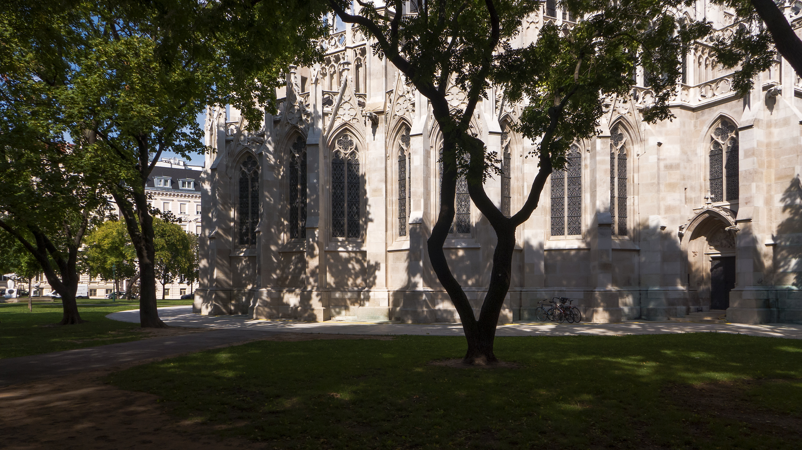

Herzlich Willkommen!
Wollen Sie Österrich mit uns entdecken
Wien im Überblick
Unsere Überblicksführungen geben Ihnen einen umfassenden Eindruck über Wien.
Museen
Wien bietet eine Fülle an Museen mit Kunstwerken und Sammlungen von Weltrang.
Führung
anfragen
Mehr
erfahren

Gärten und Parkanlagen
Wiens Grünflächen nehmen einen großen Teil der Stadt ein.
Führung
anfragen
Mehr
erfahren